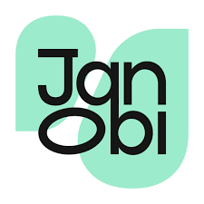

I tell clients what I genuinely think.
Even when the right answer is smaller, slower, or different from what they first asked for.

Hamza JawaidStrategy · Trust · GrowthHelping organisations become easier to trust
That is usually where I come in. I help nonprofits, small businesses, service providers, and creators figure out what is getting in the way, then build the clearest path forward.
Sometimes the website is the problem. Sometimes it is the message, the follow-up, the offer, or the fact that nobody on the team knows what happens next. I would rather find the real issue than sell the wrong solution.
Even when the right answer is smaller, slower, or different from what they first asked for.
If you ever have to ask, “Wait, what is happening?” then I am not doing my job properly.
Every recommendation should still make sense six months from now, not only on presentation day.
Selected work
01 · Ongoing nonprofit marketing leadership
The organisation offered more than visitors understood, and marketing activity needed clearer coordination.
Website direction, team communication, campaign planning, and a more connected marketing presence.
This is an ongoing Marketing Head role, not a one-off project.
02 · Nonprofit growth and Google Ad Grants
A youth nonprofit needed to become easier to find, understand, and support.
Website clarity, Google Ad Grants direction, campaign readiness, and clearer journeys for parents, students, and donors.
Visibility only helps when people know what to do next.
03 · Nonprofit brand and digital direction
The mission needed a stronger digital presence that matched the confidence and ambition behind the organisation.
Positioning, trust, clearer messaging, and a more credible path from interest to involvement.
A cause can be meaningful and still lose people if the story is not immediately clear.
04 · Creator and Meta support
Meta Business Suite and advertising tools had become harder to use than they needed to be.
Troubleshooting, account support, advertising direction, and making the tools easier to act on.
Good tools are useless when the person using them feels stuck.
What I would fix first
You do not need another generic checklist. You need to know where trust is leaking first.
I would start by asking:
Client proof
Ongoing Marketing Head role · Yonkers, New York
Watch team introduction ↗ Instagram reviewMeta Business Suite and Ads assistance
Watch review ↗ Instagram reviewWebsite copy enhancement
Watch review ↗ Instagram reviewGoogle Ad Grants support · InCLASS Inc.
Watch review ↗Let's talk
No pressure. No sales pitch. Tell me where you feel stuck. If I can help, I will tell you how. If I cannot, I will point you in the right direction.
Based in Karachi · Working worldwide